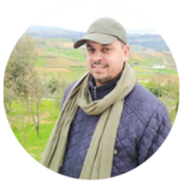

Digital Twins and AI: Revolutionizing Precision Agriculture for a Sustainable Future
Prof. Mounir Bouhedda — Professor, Yahia Farès University of Medea
Professor Mounir Bouhedda serves as a Professor at the Faculty of Technology, Yahia Farès University of Medea, Algeria, where he leads the Intelligent Systems research team at the Advanced Electronic Systems Laboratory (LSEA). After completing his engineering studies at The National Polytechnic School of Algiers, he went on to earn his Magister in Robotics and Ph.D. in Electronic Instrumentation from Houari Boumedienne University. His research encompasses various fields including IoT, embedded systems, artificial intelligence, digital twin technology, sensor networks, cryptography, and electronic instrumentation.
Through his work in smart irrigation systems, neuro-fuzzy modeling, and embedded solution implementations for applied AI techniques, he advances technological innovation while mentoring future researchers in these cutting-edge areas.